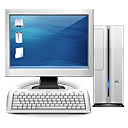
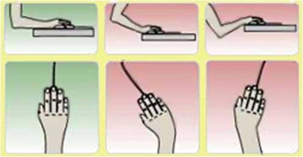

Здоровье и компьютер
Вредна ли работа на компьютере для здоровья человека? На самом деле вопрос следует поставить иначе: какие правила необходимо соблюдать, чтобы компьютер наносил минимальный вред здоровью пользователя...
КОМПЬЮТЕР: вредные для здоровья факторы и как их уменьшить
 Специалисты утверждают, что современный ПК не более опасен для здоровья, чем любой другой бытовой прибор. При условии, что человек не злоупотребляет количеством времени, проводимым за машиной. Все зависит от того, как подойти к организации работы на компьютере. Однако, если день и ночь сидеть за компьютером, то можно получить серьезные неприятности со здоровьем.
-
Нагрузка на зрение
Именно из-за нагрузки на зрение через непродолжительное время у ребенка (или другого пользователя) возникает головная боль и головокружение. Если работать на компьютере достаточно долго, то зрительное переутомление может привести к устойчивому снижению остроты зрения. Но лучше не доводить организм до этого, а давать глазам своевременно отдохнуть и всеми возможными способами уменьшить нагрузку на зрение при работе за монитором. Учитывайте следующее:-
Расстояние от глаз до монитора. Нормально монитор должен находиться на расстоянии около 45-60 см от глаз (то есть на расстоянии вытянутой руки, некоторые связывают минимальное расстояние с длиной диагонали экрана). Монитор должен располагаться на уровне глаз пользователя (или чуть ниже). Если он слишком низко, используйте подставку, чтобы его приподнять.
-
Совершенно неправильно (и это серьезно сказывается на зрении!), когда к каким-то объектам на экране приходится приглядываться. Избегайте работы с мелкими или плохо различаемыми шрифтами (особенно "бледными"), раздражающими цветами экранных объектов - этим изобилуют страницы Интернета! Важна также освещенность помещения.
-
Естественного утомления глаз после продолжительной непрерывной работы избежать нельзя. Поэтому во время работы делайте 10-15-минутный перерывы после каждого часа.
-
Не забывайте протирать поверхность экрана от пыли и других загрязнений. Это не просто борьба за чистоту - это борьба за здоровье!
-
-
Стесненная поза
-
Сидя за компьютером, ребенок (или взрослый) должен смотреть с определенного расстояния на экран и одновременно держать руки на клавиатуре или органах управления. Это вынуждает его тело принять определенное положение, и не изменять его до конца работы.
-
Следует сидеть в максимально удобном положении в максимально удобном кресле. Ваша спина должна сохранять ровное положение, ноги должны прочно опираться на пол, а голову следует держать ровно. Кроме того, ваше кресло должно быть твердым, но обеспечивать достаточную опору в области поясницы. Поэтому, самое важное в уменьшении нагрузки - это правильно подобранная мебель.
-
-
Психическая нагрузка
Третий по важности фактор - это психическая нагрузка. Компьютер требует не меньшей сосредоточенности, чем вождение автомобиля. Интересные игры требуют огромного напряжения, которого практически не бывает в обычных условиях. Эта область весьма мало изученная, поскольку современная мультимедиа-техника появилась лишь недавно. И все же можно психическую нагрузку уменьшить. Во-первых, в работе следует делать перерывы. На уроке за этим следит учитель, дома на компьютере стоит поставить таймер. Каждые 30 минут - перерыв на 15 минут, для взрослого - 10 минут. Во время перерыва необходимо делать упражнения для зрения и на расслабление мышц спины. Во-вторых, следует внимательно следить за содержательной стороной игр, в которые играет ребенок, за тем, что он программирует, и какие сайты он посещает. Хотя в общественном сознании укоренилась мысль о том, что самое вредное в компьютере - это излучения, на самом деле воздействие на психику ребенка может оказаться намного серьезнее. -
Излучение
У современных мониторов приняты выдающиеся меры по обеспечению безопасности. В частности, того излучения, которое собственно называется радиацией (гамма-лучи и нейтроны) монитор практически не производит. В нем нет устройств со столь высокой энергией. Так же практически ничего не излучает системный блок. От монитора исходит незначительное по интенсивности рентгеновское излучение (ионизирующее излучение), которое в 2-3 раза меньше естественного радиационного фона. При таком уровне излучения монитор не представляет какой-либо опасности для здоровья человека В настоящее время самым безопасным для глаз является монитор на жидких кристаллах и жидкокристаллический проектор.
Как правильно сидеть за компьютером?
Неправильное положение тела при многочасовой работе - это чуть ли не самый главный фактор, составляющий основу заболеваний человека, работающего за компьютером. Боли в спине и пояснице, нарушение кровообращения в ногах, остеохондроз, ухудшение зрения - вот неполный список недугов, которые можно заполучить, если работать по нескольку часов в день за компьютером в неправильной позе. Попробуем вспомнить нехитрые рекомендации, которые мы не раз видели на школьном плакате "Сидим правильно за партой". Те же самые правила актуальны и сегодня для работы за компьютером.
Высота стула обязательно должна соответствовать росту человека, который на нем сидит. Современные компьютерные стулья регулируются по высоте, поэтому поднять или опустить сиденье не составляет никакого труда. Наиболее удобная высота равна длине голени человека, в этом случае ноги свободно упираются в пол. В течение дня оператор ПК может регулировать высоту стула, чтобы поможет переключать нагрузку с одних мышц на другие. Анатомическая упругая спинка стула удерживает тело человека в ровном положении. А это именно так, как и нужно сидеть за компьютером.
Однако, правильная посадка - это еще не все, что рекомендуется врачами человеку, работающему за компьютером по нескольку часов в день.
-
Каждые 30 минут рекомендуется делать зарядку для глаз: 15 секунд смотреть на ближайшую к вам точку (например, карандаш в руке) и 15 секунда - на самую удаленную. Рекомендуется также для снятия усталости с глаз поводить ими вверх-вниз, вправо-влево.
-
Каждый час вставайте из-за компьютера, разминайте руки и спину. Стоит походить, отвлечься от изображения на мониторе.
-
Работая за ПК длительное время, не забывайте каждые 15-20 минут менять положение тела, поднимать или опускать сиденье стула. Все это поможет избежать мышечной усталости, снижения работоспособности и стрессов.
 Отдельно следует сказать о положении мыши, так как это основной рабочий инструмент графического интерфейса Windows и не только. Именно с ней связывают появление "профессионального" заболевания пользователя компьютера - туннельного синдрома запястного канала. Причиной его возникновения является защемление запястного нерва. В результате появляется ощущение боли или дискомфорта в руках, онемение ладоней.
Первые симптомы различаются очень хорошо, поэтому вы сможете "вовремя спохватиться" и следовать приведенным далее советам. Для профилактики этого заболевания:
-
Периодически прерывайте работу и выполняйте гимнастику для кистей рук (встряхивайте кисти, сжимайте их в кулаки, вращайте кулаки вокруг своей оси, соедините ладони и надавливайте пальцами одной руки на другую и др.).
-
Чтобы не провисал локоть рабочей руки, кисть должна быть прямой и лежать на столе как можно дальше от его края, как на схеме.
-
Желательно на коврике мыши иметь специальную выпуклость для запястья, которая разгружает мышцы кисти. Можно использовать для этого небольшую подушечку.
Упражнения для глаз
Эффективная профилактическая мера - зрительная гимнастика. Ее проводят дважды: через 7-8 минут от начала работы ребенка на компьютере и после ее окончания. Непродолжительная гимнастика - около одной минуты, проста и доступна каждому. Например, сидя за компьютером, ребенок поднимает глаза вверх и, представив летящего там мотылька или бабочку, следит за их полетом из одного угла комнаты в другой, не поворачивая при этом головы - двигаться должны только глаза!
Есть, конечно, и другие простые упражнения.
-
На счет 1-4 закрыть глаза, не напрягая глазные мышцы, на счет 1-6 широко раскрыть глаза и посмотреть вдаль. Повторить 4-5 раз.
-
Посмотреть на кончик носа на счет 1-4, а потом перевести взгляд вдаль на счет 1-6. Повторить 4-5 раз.
-
Не поворачивая головы, медленно делать круговые движения глазами вверх-вправо-вниз-влево и в обратную сторону: вверх-влево-вниз-вправо. Затем посмотреть вдаль на счет 1-6. Повторить 4-5 раз.
-
Держа голову неподвижно, перевести взор, зафиксировав его, на счет 1-4 вверх, на счет 1-6 прямо; затем аналогично вниз-прямо, вправо-прямо, влево-прямо. Проделать движение по диагонали в одну и другую стороны, переводя глаза прямо на счет 1-6. Повторить 3-4 раза.
-
Не поворачивая головы, закрытыми глазами "посмотреть" направо на счет 1-4 и прямо на счет 1-6. Поднять глаза вверх на счет 1-4, опустить вниз на счет 1-4 и перевести взгляд прямо на счет 1-6. Повторить 4-5 раз.
-
Посмотреть на указательный палец, удаленный от глаз на расстоянии 25-30 см, и на счет 1-4 приблизить его к кончику носа, потом перевести взор вдаль на счет 1-6. Повторить 4-5 раз.